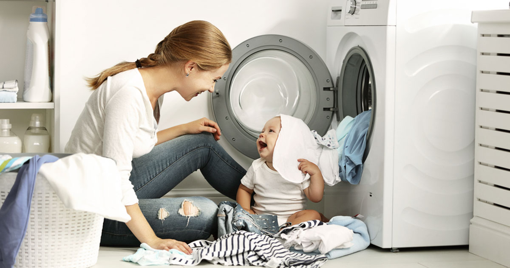

Total de acendimentos: 0

Cada vez mais, as pessoas estão buscando formas de economizar energia elétrica. Conforme levantamento, o Brasil está entre as nações com a energia mais cara. Além da motivação financeira, há, ainda, a que envolve a sustentabilidade. Pesquisas demonstram que o brasileiro ocupa o terceiro lugar no ranking de povos com maior consciência e preocupação com a sustentabilidade. A humanidade está passando por constantes crises hídricas e energéticas, então é importante que tenha pessoas pensando no meio ambiente ao mesmo tempo em que garantem economia de energia elétrica.
É o seu caso? Então confira nossas dicas a seguir!
1. Valorize a iluminação natural
Entre as formas de economizar energia elétrica, a valorização da iluminação natural é uma das mais práticas e benéficas. Por meio dessa iniciativa, é possível otimizar a capacidade de iluminação dos ambientes, reduzindo a necessidade de ligar luzes artificiais e, ainda, ter mais conforto visual e bem-estar ao aumentar o contato com a luz solar[cite: 1].
Para isso, evite o bloqueio da luz natural feito por mobiliários mais robustos como estantes e roupeiros. Também é recomendado pintar as paredes com cores claras, que ajudam a refletir melhor a iluminação do sol.
Ainda, apostar no uso de espelhos nas paredes, e até mesmo em móveis espelhados, é uma estratégia inteligente, pois eles, além de gerarem uma sensação de amplitude, ajudam a iluminar os cômodos, refletindo luz.
2. Troque suas lâmpadas
Na hora de pensar em formas de economizar energia elétrica é preciso levar em conta a troca das lâmpadas de sua residência. Isso porque esse tipo de iluminação é responsável por cerca de 20% do consumo total de energia de uma casa. Por isso, é importante optar pelos modelos que demandem menor consumo.
As lâmpadas incandescentes estão entre os modelos que devem ser trocados, visto serem os que mais consomem energia. Já as lâmpadas de LED tem melhor custo x benefício, já que são 80% mais econômicas do que as incandescente e 30% mais econômicas do que as fluorescentes.
3. Tire os aparelhos eletrônicos da tomada
Há algumas pessoas que pensam que é mito, mas o fato é que tirar os aparelhos eletrônicos da tomada pode realmente reduzir o consumo de energia elétrica. Entre os equipamentos que mais geram esse tipo de custo estão televisores e fornos micro-ondas.
Se você tem dúvidas sobre a efetividade dessa ação, saiba que, não é novidade que aparelhos ligados consomem demais. Faça um teste. Sabia que somente um decodificador de TV a cabo que é utilizado por poucas horas no dia, mas fica o restante do tempo na tomada, pode gerar um custo adicional de quase cem reais anualmente?
4. Tenha atenção ao estado dos eletrodomésticos
Manter seus eletrodomésticos em boas condições é fundamental para não gerar desperdício de energia elétrica. Por isso, é importante adotar práticas como verificar se a borracha da geladeira apresenta boa vedação e limpar regularmente filtros de máquinas de lavar e condicionares de ar.
5. Diminua o uso de aparelhos como ferro elétrico, chuveiro e máquina de lavar
Na composição de uma conta de luz, o uso de máquina de lavar e do chuveiro estão entre os campeões em elevar custos.
Para reduzir seu consumo, dê preferência a passar mais roupas por vez do que passar uma peça a cada ligada do ferro. Ao utilizar o chuveiro, sempre que possível, utilize a função Verão e tente diminuir o tempo de seus banhos. Para o caso da máquina de lavar, também busque juntar diversas peças para utilizar capacidade total do equipamento, ao invés de lavar poucas peças por vez.
Com pequenas atitudes, é possível alcançar grandes resultados! Essas são formas simples de economizar energia, reduzir sua conta de luz e, ainda, de ter atitudes mais sustentáveis em seu dia a dia.
Se não economizarmos, pode faltar energia!